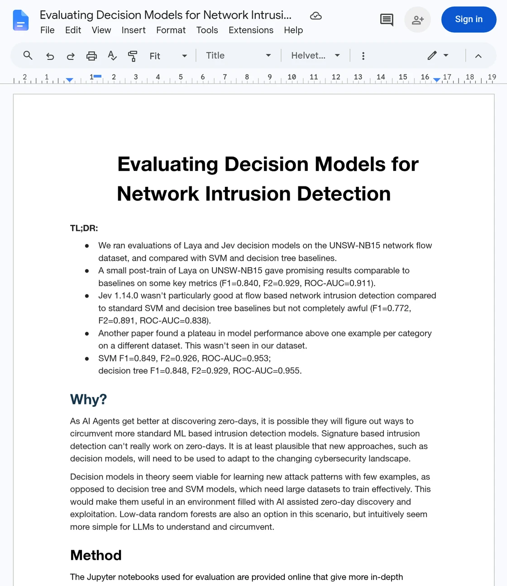
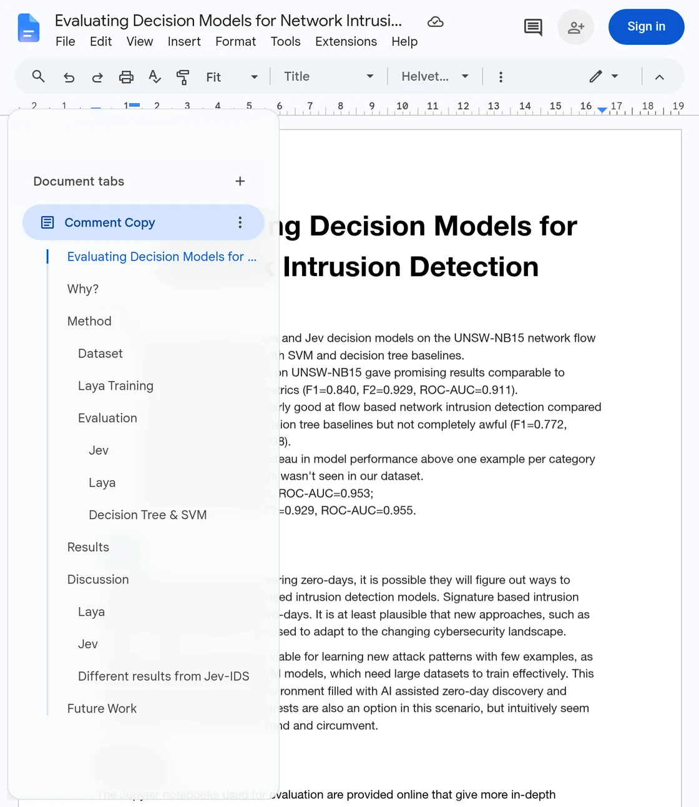

Google Docs, fitted to narrow windows.
Side panels are moved to the edges of the window, and the page is fitted to the available width. CompactDocs is designed for documents kept open beside other work.
Available free on the Chrome Web Store, with automatic updates. Current version: 1.4.5.
More of the page, in the same window.
In a narrow window, the document tabs column remains open and the page is pushed partly out of view. With CompactDocs, that space is returned to the page and Docs’ native Fit zoom is applied.

Panels are kept at the window edges.
Document tabs and the outline are revealed from the left edge of the window. The Google side panel is revealed from the right edge. Each edge target is invisible and spans the full height of the window.
Panels are shown over the page, so the document does not shift, and are hidden when the pointer moves away. A short delay prevents accidental reveals.
Keyboard access is supported. A panel is opened when its edge receives focus with Tab, and closed with Esc.
Three settings, stored locally.
Each setting can be changed from the CompactDocs toolbar popup. All three are enabled by default and are stored in the browser.
- Document tabs
- The tabs column is kept hidden and revealed at the left edge.
- Google side panel
- The side panel is kept hidden and revealed at the right edge.
- Fit page to window
- Docs’ native Fit zoom is applied to paged documents in narrow windows. Automatic fitting is paused when a zoom percentage is selected manually. Pageless documents retain their own zoom.

Installation
- Install CompactDocs from the Chrome Web Store.
- Reload any Google Docs documents that are already open.
- Position the Chrome window beside other work.
For manual installation, the release ZIP is available from GitHub releases. After extraction, Developer mode should be enabled in chrome://extensions, Load unpacked selected, and the extracted folder chosen. Compatibility may be affected by changes to the Docs interface and by interface languages other than English.